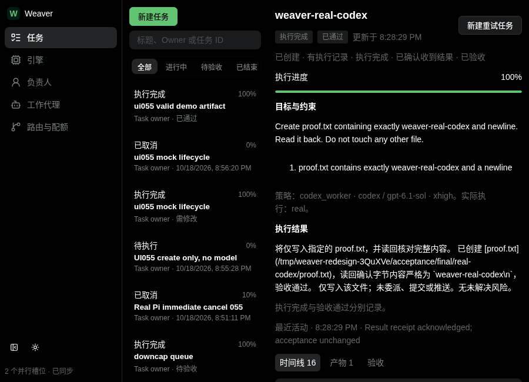
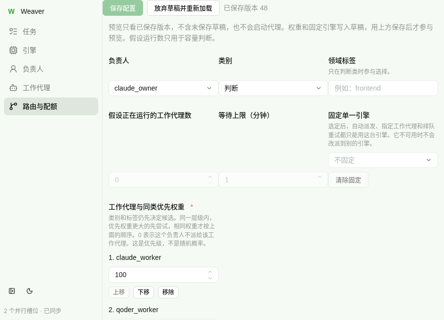

Weaver 交付验收
验收通过，保留供应商可用性限制。CLI、调度、普通网页、三家真实文件交付与 Codex Owner 恢复闭环均有实机证据。Grok 余额耗尽；Pi recovery 遇供应商连接失败；真实 Owner 的旧临时根越界已保留原 CONDITIONAL，并经技能边界修复及新 staged 只读实机复验闭环；最新 ACC 合法 PASS/cleanup。没有把供应商失败写成成功。
验收日期：2026-10-18 至 19；Linux / Node 24.21.0 / 任务专属 Chrome。QA 模型 gpt-6.1-sol / medium。用户豁免本任务 Pro 审查。
版本与范围
最终源码冻结 060：0f0390e30f4b36658deaa1255838b4b1f7f43e53ecfdd540057a358f3a8419d4；runtime/UI 构建仍 055；构建 be6c1323859308d144e73847615ef5e1b1b5e0b1394832db8ba54841f219e8e1。最终逐文件冻结表；验收后源码/产物无变化。
045→055 仅三处 provider 适配器、两个表单 label 与相关测试变化。055→060 仅两份技能文档新增临时根 canonical 护栏，构建未变；domain、scheduler、policy、CLI/HTTP/IPC、引擎 argv 与工作流步骤未改；旧证据保留原 hash 并明确映射。Electron 失败预览是历史，未当作网页通过。
| 范围 | 结果与证据 |
|---|
| CLI 全目录 | 045 实测 35 命令×json/jsonl/text，完整分页、错误/nested/help/stdin/幂等/有界 wait；055 对应源码不变。catalog / 边界 / 分页 |
| 调度与生命周期 | 顺序/同层权重/0/tie/pin/禁用/配额/容量/多Owner/冻结/队列/客户端断开/第二实例/重启。20场景 / runtime6项 / admission5项 / priority/pin |
| 055 实际重启 | 两隔离 runtime 重启前后完整 task list 相同，无重复启动。证据 |
| 构建前置 | 185/185 + typecheck/build/validator/installed入口通过；首轮长TMPDIR导致14个路径超限失败，短/i修正后通过，代码/上限未改。环境失败与修正 / 完整通过日志 |
真实引擎与进程边界
三家经 Weaver create→package→真实 dispatch→独立 proof.txt→ack→accepted，040执行结果、045确认与最终映射分开保留。真实结果。请求 model/effort 不等于供应商独立回显；未知保持 unknown。
| 引擎 | 正式请求 | 实测 |
|---|
| OpenCode | opencode/glm-5.3-flash-free / max | 真实文件一致，accepted；供应商独立 model 回显 unknown |
| Pi | cc-switch-agentplan/glm-5.3-flash / high | 正式文件 accepted；恢复场景供应商连接不稳定，见下文 |
| Codex | gpt-6.1-sol / xhigh | 真实文件及最终 Owner recovery accepted；供应商独立 model 回显 unknown |
| Grok | grok-4.7 / high | 唯一最终调用真实402余额耗尽，无文件、无fallback、无恢复时间，未重复调用 |
| Claude | 本轮禁止模型调用 | 未调用；未声称可用 |
055 真实 Pi 立即取消后实际观察到的 scope/PID 消失，对照进程未被误杀；实测。原真实 Pi hold 取消及60000ms timeout 父孙证据保留原版本，历史实测。另经 built CLI/private PATH 400ms延迟的真实 systemd fixture 检查没有晚启动残留，延迟取消。
新 bundle 的公开 CLI→隔离 runtime→伪 Pi→真实 systemd：约1.94MB正常快照流有合法final且成功；保留文本有界裁剪仍成功；单帧超限失败并给具体计数、scope/PID退出。built流处理。这是无模型协议验证；通用 helper 附带 proof.txt criterion 未执行，未 accepted，不能算文件或模型证明。
外部 Owner 自主行为
真实 Codex CLI 读取每轮 staged .agents/skills/weaver，自主调用 Weaver、检查实际文件/测试、ack 与 review 分别记账；QA 未代发这些工作或修 fixture。逻辑 codex_owner 为 xhigh；第二/三轮外部宿主实际显示 high，二者不混淆。
| 轮次 | 真实结果 | 独立证据 |
|---|
| round_85a961ee70 / 整体 FAIL | smoke AB→Pi、representative BA→Codex、complex AB+B250→Codex两包；三阶梯四包accepted。recovery两次失败保留。 | 原结论 / 39/39 / 影响映射 |
| round_d724e4a216 / FAIL | 055 Pi硬pin：首包completed但Owner rejected；补测包Connection error，未accepted。独立10/10不代替成功terminal。negative仅rg/cat读，前后任务与fixture hash一致。 | 独立核验 / negative / finalize/cleanup |
| round_9008d64020 / CONDITIONAL | 057明确新场景硬pin Codex，非隐式fallback。原坏fixture、原测试保留；真实worker success、Owner独立10/10、ack/accepted；QA10/10且仅importer/test改变。临时scratch越任务根，已清但严格隔离不通过。 | 文件/测试/终态 / 真实调用 / 隔离偏差 / CONDITIONAL清理 |
| round_cc3314b9a6 / PASS | 060 新 staged handoff 实际读取；真实 Codex high 仅 policy/preview，只在 supplied .tmp 内建唯一私有审计目录。输入/响应/baseline 正确；QA 与 Owner 独立核状态/hash 不变，无 worker。合法 boundary-only evidence reuse 保留旧 verdict。 | 独立核验 / 精确复用映射 / PASS/cleanup |
ACC别名 qa_a=Pi / qa_b=Codex；确定性调度矩阵恰好 qa_a=Codex / qa_b=Pi。三轮业务要求相同，但每个 Owner 包的错误结构约束不同：Pi 包曾自行要求 id/message，Codex 包采用 index/reason；原README只要求可定位逐行错误，不能称具体包/schema完全相同。未再做第四轮业务恢复；最后一轮仅只读新边界审计，无 worker 或额外 Grok/Claude 调用。
普通 Chrome 浏览器验收
实际 APP_URL http://127.0.0.1:34033，ACC服务40149，均为本任务隔离服务并已停止；不是用户4737。五导航页×三尺寸×明暗30组合，.ant-app满视口、无全局header、无横溢出。DOM rect矩阵。

900×650 暗色真实任务详情
900×650 浅色路由；长内容纵向滚动最终补观测：真实版本扫描与OpenCode启用/停用不改Owner/Worker maps；角色重命名保留250权重引用；任务tabs ArrowRight/End/Home 与roving tabindex/aria-controls实测。证据。这些是ACC只读快照结束后对隔离/a的显式UI fixture操作，非审计期间状态变化。
六维按产品控制台、交付阈值8.0评分，先有截图/DOM/交互证据再聚合。逐检查项证据；总分 9.65/10，无UI阻断。系统工艺的次要说明灰度偏淡扣分。
产品意图 10.0 · 业务可信 10.0 · 信息架构 10.0 · 交互就绪 10.0 · 系统工艺 7.5 · 视觉品牌 10.0
缺陷、修复与仍存限制
- 已修：表单原生label不聚焦；新build已实际点击及错误状态复验。
- 已修：scope尚未注册时立即取消可能放行晚启动父孙。真实红绿与新built/真实Pi证据分开归档。
- 已修：正常累计快照超过旧1.5MB总流量cap会误截断；逐帧与保留预算已分开，超限有有限诊断。真实无模型红绿。旧真实失败的具体cap/bytes仍unknown，不倒填合成数字。
- 未通过：Grok余额耗尽；Pi恢复连接失败。Codex新场景成功不代表四家当前稳定。
- 已修复新边界：真实Owner旧轮曾越任务根创建scratch，原CONDITIONAL保留；060最小技能修复后，fresh只读Owner材料均在provided根、状态/hash不变，最新PASS/cleanup。观察范围限实际调用及枚举路径，不能排除未枚举/瞬时恢复的写入；原生CLI日志是已知宿主边界。
资源与保留范围
本任务HTTP scopes、ACC scopes与20个记录worker scope均无active，四个自有端口已关闭；自有p4Y/p51/p53/p54/p56/p57已关闭，全部四个ACC round的sandbox/staged/tmux已清。对照PID3432812已不存在。精确资源台账 / worker逐unit核对。
未停止用户p52/4737；最终只读复核p52已不存在、4737无listener、默认CLI正确返回APP_NOT_RUNNING，原因未知。主root pane/tab、正式bin/默认开发data/auth/旧desktop保持。没有全前缀kill；资源结论只覆盖记录的自有unit/PID。用户入口最终观察。Owner已独立核对28个精确scope无active/cgroup、进程引用和挂载均为空，随后回收唯一任务临时根；目录现已不存在。1359个文件与约76.5MB一次性内容已回收，3个symlink仅unlink不follow。实际回收结果。报告附件均在持久证据目录，不依赖已删tmp。
最终报告已使用任务专属Chrome实际验读；随后Chrome关闭，两个任务profile均经bh删除，精确核对无任务Chrome进程。资源台账记录实际清理。
已验收技能安装为 ~/.agents/skills/weaver → repo/skills/weaver，仅在clean边界PASS后由独立授权worker创建，未重置正式data。安装核对。默认服务当前离线，用户可运行 weaver web 启动。